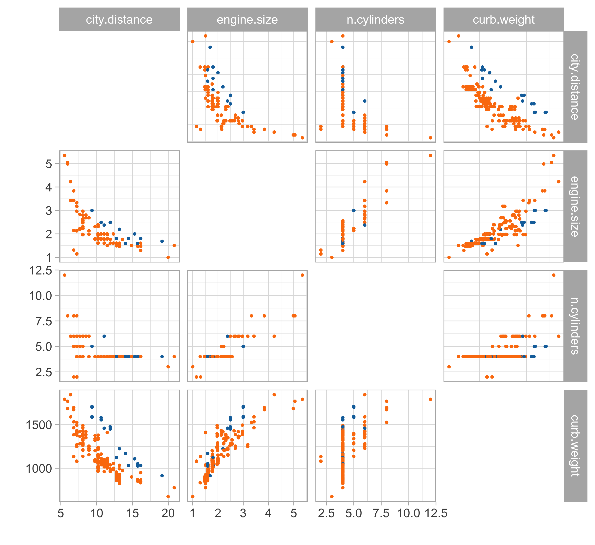
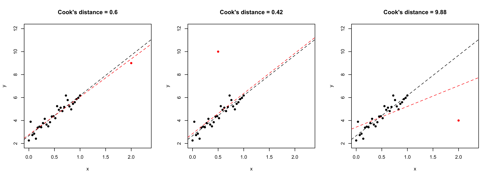

Linear models and misspecification
Statistics III - CdL SSE
Homepage

“Everything should be made as simple as possible, but not simpler”
Attributed to Albert Einstein
This unit will cover the following topics:
- Recap: linear models and the modeling process
- Robustness of OLS estimates, sandwich estimators
- Weighted least squares
- Box-Cox transform, variance stabilizing transformations
The main theme is: what should we do when the assumptions of linear models are violated?
We will push the linear model to its limit, using it even when is not supposed to work.
The symbol üìñ means that a few extra steps are discussed in the handwritten notes.
The modeling process
Car data (diesel or gas)
- We consider data for n = 203 models of cars in circulation in 1985 in the USA.
- We want to predict the distance per unit of fuel as a function of the vehicle features.
- We consider the following variables:
- The city distance per unit of fuel (km/L,
city.distance) - The engine size (L,
engine.size) - The number of cylinders (
n.cylinders) - The curb weight (kg,
curb.weight) - The fuel type (gasoline or diesel,
fuel).
- The city distance per unit of fuel (km/L,
Linear regression

Let us consider the variables
city.distance(y),engine.size(x) andfuel(z).A simple linear regression Y_i = \beta_1 + \beta_2 x_i + \epsilon_i, \qquad i=1,\dots,n, could be easily fit by least squares…
… but the plot suggests that the relationship between
city.distanceandengine.sizeis not well approximated by a linear function.… and also that
fuelhas a non-negligible effect on the response.
Regression models
A general and more flexible formulation for modeling the relationship between a vector of fixed covariates \boldsymbol{x}_i = (x_{i1},\dots,x_{ip})^T \in \mathbb{R}^p and a random variable Y_i \in \mathbb{R} is Y_i = f(\boldsymbol{x}_i; \beta) + \epsilon_i, \qquad i=1,\dots,n, where the “errors” \epsilon_i are iid random variables, having zero mean and variance \sigma^2.
To estimate the unknown parameters \beta, a possibility is to rely on the least squares criterion: we seek the minimum of the objective function D(\beta) = \sum_{i=1}^n\{y_i - f(\boldsymbol{x}_i; \beta)\}^2, using n pairs of covariates \boldsymbol{x}_i = (x_{i1},\dots,x_{ip})^T and the observed realizations y_i of the random variables Y_i, for i = 1,\dots,n. The optimal value is denoted by \hat{\beta}.
The predicted values are \hat{y}_i = \widehat{\mathbb{E}(Y_i)} = f(\boldsymbol{x}_i; \hat{\beta}), for i=1,\dots,n.
Linear models
Let us consider again the variables
city.distance(y),engine.size(x) andfuel(z).Which function f(x,z;\beta) should we choose?
- A first attempt is to consider a polynomial term combined with a dummy variable f(x, z; \beta) = \beta_1 + \beta_2 x + \beta_3 x^2 + \beta_4 x^3 + \beta_5 I(z = \texttt{gas}), which is a special instance of linear model.
Matrix notation
The response random variables are collected in the random vector \boldsymbol{Y} = (Y_1,\dots,Y_n)^T, whose observed realization is \boldsymbol{y} = (y_1,\dots,y_n)^T.
The design matrix is a n \times p matrix, comprising the covariate’s values, defined by \boldsymbol{X} = \begin{bmatrix} x_{11} & \cdots & x_{1p}\\ \vdots & \ddots & \vdots \\ x_{n1} & \cdots & x_{np} \end{bmatrix}.
- The jth variable (column) is denoted with \tilde{\boldsymbol{x}}_j, whereas the ith observation (row) is \boldsymbol{x}_i: \boldsymbol{X} = (\tilde{\boldsymbol{x}}_1,\dots,\tilde{\boldsymbol{x}}_p) = (\boldsymbol{x}_1, \dots,\boldsymbol{x}_n)^T.
- Then, a linear model can be written using the compact notation: \boldsymbol{Y} = \boldsymbol{X}\beta + \boldsymbol{\epsilon}, where \boldsymbol{\epsilon} = (\epsilon_1,\dots,\epsilon_n)^T is a vector of iid error terms with zero mean and variance \sigma^2.
Linear regression: estimation I
- The optimal set of coefficients \hat{\beta} is the minimizer of the least squared criterion D(\beta) = (\boldsymbol{y} - \boldsymbol{X}\beta)^T(\boldsymbol{y} - \boldsymbol{X}\beta) = ||\boldsymbol{y} - \boldsymbol{X}\beta||^2, also known as residual sum of squares (RSS), where ||\boldsymbol{y}|| = \sqrt{y_1^2 + \cdots + y_n^2}, denotes the Euclidean norm.
Linear regression: estimation II
- In matrix notation, the predicted values can be obtained as \hat{\boldsymbol{y}} = \boldsymbol{X}\hat{\beta} = \boldsymbol{H}\boldsymbol{y}, \qquad \boldsymbol{H} = \boldsymbol{X}(\boldsymbol{X}^T\boldsymbol{X})^{-1}\boldsymbol{X}^T, where \boldsymbol{H} is a n \times n projection matrix matrix sometimes called hat matrix. The matrix is idempotent, meaning that \boldsymbol{H} = \boldsymbol{H}^T and \boldsymbol{H}^2 = \boldsymbol{H}.
The quantity D(\hat{\beta}) is the so-called deviance, which is equal to D(\hat{\beta}) = ||\boldsymbol{y} - \hat{\boldsymbol{y}}||^2 = \boldsymbol{y}^T(I_n - \boldsymbol{H})\boldsymbol{y}.
Moreover, a typical estimate for the residual variance \sigma^2 is obtained as follows: s^2 = \frac{D(\hat{\beta})}{n - p} = \frac{1}{n-p}\sum_{i=1}^n(y_i - \boldsymbol{x}_i^T\hat{\beta})^2.
To evaluate the goodness of fit, we can calculate the coefficient of determination: R^2 = 1 - \frac{\textsf{(``Residual deviance'')}}{\textsf{(``Total deviance'')}} = 1 - \frac{\sum_{i=1}^n (y_i - \hat{y}_i)^2}{\sum_{i=1}^n(y_i - \bar{y})^2}.
Linear regression: inference
Recall that the errors \boldsymbol{\epsilon} have zero mean \mathbb{E}(\boldsymbol{\epsilon}) = 0 and are uncorrelated \text{var}(\boldsymbol{\epsilon}) = \sigma^2I_n.
Then, the estimator \hat{\beta} is unbiased \mathbb{E}(\hat{\beta}) = \beta and its variance is \text{var}(\hat{\beta}) = \sigma^2 (\boldsymbol{X}^T\boldsymbol{X})^{-1}. Since \sigma^2 is also unknown, we can estimate the variances of \hat{\beta} as follows: \widehat{\text{var}}(\hat{\beta}) = s^2 (\boldsymbol{X}^T\boldsymbol{X})^{-1}.
The standard errors of the components of \hat{\beta} correspond to the square root of the diagonal of the above covariance matrix.
Let us additionally assume that the errors follow a Gaussian distribution: \epsilon_i \overset{\text{iid}}{\sim} \text{N}(0, \sigma^2).
This implies that the distribution of the estimator \hat{\beta} is \hat{\beta} \sim \text{N}_p(\beta, \sigma^2 (\boldsymbol{X}^T\boldsymbol{X})^{-1}).
Confidence interval and Wald’s tests can be obtained through classical inferential theory.
Linear regression: diagnostic
The diagonal elements h_i \in [0, 1] of the matrix \boldsymbol{H} are called leverages and it holds \text{var}(\hat{Y}_i) = \sigma^2 h_i, \qquad \text{var}(Y_i - \hat{Y}_i) = \sigma^2 (1 - h_i), \qquad \text{cor}(Y_i, \hat{Y}_i) = \sqrt{h_i}. The leverage h_i determines the precision with which \hat{Y}_i predicts Y_i. For large h_i close to 1, \text{cor}(Y_i, \hat{Y}_i) \approx 1, therefore changes of a single point Y_i leads to significant changes in \hat{Y}_i.
Leverages also appear in the definition of standardized residuals: \tilde{r}_i = \frac{r_i}{\sqrt{s^2(1 - h_i)}} = \frac{y_i - \boldsymbol{x}_i^T\hat{\beta}}{\sqrt{s^2(1 - h_i)}}, where r_i = y_i - \boldsymbol{x}_i^T\hat{\beta} are the (raw) residuals.
- An observation is influent if it has high leverage and high squared residual. Cook’s distance c_i is based on the change in \hat{\beta} when the observation is removed: p \cdot c_i = (\hat{\beta} - \hat{\beta}_{-i})^T\widehat{\text{var}}(\hat{\beta})^{-1}(\hat{\beta} - \hat{\beta}_{-i}) = \tilde{r}_i^2 \frac{h_i}{p(1 - h_i)}. Cook’s distance is considered relatively large when c_i \ge 1.
Leverages, outliers and influence points

- Left plot: leverage, not outlier. Central plot: outlier, not leverage. Right plot: influence point = leverage + outlier.
A first model: estimated coefficients
Our first attempt for predicting
city.distance(y) viaengine.size(x) andfuel(z) is: f(x, z; \beta) = \beta_1 + \beta_2 x + \beta_3 x^2 + \beta_4 x^3 + \beta_5 I(z = \texttt{gas}).We obtain the following summary for the regression coefficients \hat{\beta}.
| term | estimate | std.error | statistic | p.value |
|---|---|---|---|---|
(Intercept) |
28.045 | 3.076 | 9.119 | 0.000 |
engine.size |
-10.980 | 3.531 | -3.109 | 0.002 |
engine.size^2 |
2.098 | 1.271 | 1.651 | 0.100 |
engine.size^3 |
-0.131 | 0.139 | -0.939 | 0.349 |
fuel_gas |
-3.214 | 0.427 | -7.523 | 0.000 |
- Moreover, the coefficient R^2 and the residual standard deviation s are:
| r.squared | sigma | deviance |
|---|---|---|
| 0.5973454 | 1.790362 | 634.6687 |
A first model: fitted values

A first model: graphical diagnostics

Linear models and non-linear patterns
- A significant advantage of linear models is that they can describe non-linear relationships via variable transformations such as polynomials, logarithms, etc.
- This gives the statistician a lot of modeling flexibility. For instance, we could let: \log{Y_i} = \beta_1 + \beta_2 \log{x_i} + \beta_3 I(z_i = \texttt{gas}) + \epsilon_i, \qquad i=1,\dots,n.
- This specification is linear in the parameters, it fixes the domain issues, and it imposes a monotone relationship between engine size and consumption.
| term | estimate | std.error | statistic | p.value |
|---|---|---|---|---|
(Intercept) |
3.060 | 0.047 | 64.865 | 0 |
log(engine.size) |
-0.682 | 0.040 | -17.129 | 0 |
fuel_gas |
-0.278 | 0.038 | -7.344 | 0 |
Second model: fitted values

Second model: graphical diagnostics

Comments and criticisms
- The goodness of fit indices are the following:
| r.squared.original | r.squared | sigma | deviance |
|---|---|---|---|
| 0.5847555 | 0.6196093 | 0.1600278 | 5.121777 |
- Do not mix apple and oranges! Compare R^2s only if they refer to the same scale!
This second model is more parsimonious, and yet it reaches satisfactory predictive performance.
It is also more coherent with the nature of the data: the predictions cannot be negative, and the relationship between engine size and the consumption is monotone.
Yet, there is still some heteroscedasticity in the residuals — is this is due to a missing covariate that has not been included in the model?
A third model: additional variables
Let us consider two additional variables:
curb.weight(w) andn.cylinders(v).A richer model, therefore, could be: \log{Y_i} = \beta_1 + \beta_2 \log{x_i} + \beta_3 \log{w_i} + \beta_4 I(z_i = \texttt{gas}) + \beta_5 I(v_i = 2) + \epsilon_i, for i=1,\dots,n. The estimates are:
| term | estimate | std.error | statistic | p.value |
|---|---|---|---|---|
(Intercept) |
9.423 | 0.482 | 19.549 | 0.000 |
log(engine.size) |
-0.180 | 0.051 | -3.504 | 0.001 |
log(curb.weight) |
-0.943 | 0.072 | -13.066 | 0.000 |
fuel_gas |
-0.353 | 0.022 | -15.934 | 0.000 |
cylinders2_TRUE |
-0.481 | 0.052 | -9.301 | 0.000 |
A third model: graphical diagnostics

Comments and criticisms
- The goodness of fit greatly improved:
| r.squared.original | r.squared | sigma | deviance |
|---|---|---|---|
| 0.869048 | 0.8819199 | 0.0896089 | 1.589891 |
In this third model, we handled the outliers appearing in the residual plots, which it turns out are identified by the group of cars having 2 cylinders.
The diagnostic plots are also very much improved, although still not perfect.
The estimates are coherent with our expectations, based on common knowledge. Have a look at the book (Azzalini and Scarpa (2012)) for a detailed explanation of \beta_4!
The car dataset is available from the textbook (A&S) website:
- Dataset http://azzalini.stat.unipd.it/Book-DM/auto.dat
- Variable description http://azzalini.stat.unipd.it/Book-DM/auto.names
Misspecification and remedies
Assumptions and misspecification
1 If the intercept is included in \boldsymbol{X}, the errors automatically satisfy the property \mathbb{E}(\boldsymbol{\epsilon}) = 0.
- If one of the above assumptions is violated, it is not necessarily a huge problem, because
- the OLS estimator \hat{\beta} is fairly robust to misspecification;
- simple fixes (variable transformations, standard error corrections) are available.
Robust estimation and assumptions

A plane can still fly with one of its engines on fire, but this is hardly an appealing situation.
Similarly, robust estimators may work under model misspecification, but this does not mean we should neglect checking whether the original assumptions hold.
Non-normality of the errors I üìñ
Let us consider the case in which assumptions (A.1)-(A.2) are valid but (A.3) is not, that is \mathbb{E}(\boldsymbol{\epsilon}) = 0 and \text{var}(\boldsymbol{\epsilon}) = \sigma^2 I_n, but \epsilon does not follow a Gaussian distribution.
For example, \epsilon_i may follow a Laplace distribution, a skew-Normal, a logistic distribution, a Student’s t distribution, etc.
- The OLS estimate \hat{\beta} is not anymore the maximum likelihood estimator, but it preserves most of its properties and a geometric interpretation.
- In fact, note that the proof of the Gauss-Markov theorem requires (A.1)-(A.2) but not (A.3).
Non-normality of the errors II
When the errors are non Gaussian the exact inferential results are not valid. In particular \hat{\beta} does not follow anymore a Gaussian distribution.
However, a central limit theorem can be invoked under very mild conditions on the design matrix \boldsymbol{X}.
Thus, when the sample size n is large enough, then the following approximation holds \hat{\beta} \:\dot{\sim}\: \text{N}_p(\beta, \sigma^2(\boldsymbol{X}^T\boldsymbol{X})^{-1}), from which confidence intervals and test statistics can be obtained as usual. The approximation is excellent if the errors are symmetric around 0.
Heteroschedasticity of the errors I üìñ
Suppose now that the linearity assumption (A.1) is valid but homoschedasticity of the errors (A.2) is not. Instead, we consider heteroschedastic errors: \text{var}(\boldsymbol{\epsilon}) = \boldsymbol{\Sigma},\quad \text{or equivalenty} \quad \text{var}(Y_i) = \sigma^2_i, \quad i=1,\dots,n where \boldsymbol{\Sigma} = \text{diag}(\sigma^2_1,\dots,\sigma_n^2) is a diagonal matrix with positive entries.
The OLS estimator is still unbiased, with a modified covariance structure2 \mathbb{E}(\hat{\beta}) = \beta, \qquad \text{var}(\hat{\beta}) = (\boldsymbol{X}^T\boldsymbol{X})^{-1}\boldsymbol{X}^T\boldsymbol{\Sigma}\boldsymbol{X} (\boldsymbol{X}^T\boldsymbol{X})^{-1}. If in addition we assume Gaussianity of the errors, that is \boldsymbol{\epsilon} \sim \text{N}_n(0,\boldsymbol{\Sigma}), then \hat{\beta} \sim \text{N}_p(\beta, (\boldsymbol{X}^T\boldsymbol{X})^{-1}\boldsymbol{X}^T\boldsymbol{\Sigma}\boldsymbol{X} (\boldsymbol{X}^T\boldsymbol{X})^{-1}). Under suitable but mild conditions on \boldsymbol{X} and \boldsymbol{\Sigma}, the estimator is also consistent.
2 These results are valid even when the matrix \boldsymbol{\Sigma} is non-diagonal. This is useful to model correlated responses.
Heteroschedasticity of the errors II
A potential approach is to accept the inefficiency of the OLS estimator in this scenario and correct the standard errors.
The elements of \boldsymbol{\Sigma} are unknown, but we can estimate them from the data. Note that \text{var}(r_i) = \text{var}(y_i - \boldsymbol{x}_i^T\hat{\beta}) = \sigma^2_i(1 - h_i), suggesting the estimate \hat{\sigma}^2_i = r_i^2 / (1 - h_i).
This leads to the so-called sandwich estimator of the covariance matrix: \widehat{\text{var}}(\hat{\beta}) = (\boldsymbol{X}^T\boldsymbol{X})^{-1}\boldsymbol{X}^T\hat{\boldsymbol{\Sigma}}\boldsymbol{X} (\boldsymbol{X}^T\boldsymbol{X})^{-1}, where \hat{\boldsymbol{\Sigma}} = \text{diag}(\hat{w}_1,\dots,\hat{w}_n) and \hat{w}_i = r_i^2 / (1 - h_i).
These are known as White’s heteroscedasticity-consistent standard errors. 3
3 White originally proposed the simpler version \hat{\sigma}^2_i = r_i^2. Another variant is \hat{\sigma}^2_i = r_i^2 / (1 - h_i)^2.
Weighted least squares I üìñ
Let us consider again the case of heteroschedastic errors: \text{var}(\boldsymbol{\epsilon}) = \sigma^2\boldsymbol{\Omega}^{-1},\quad \text{or equivalenty} \quad \text{var}(Y_i) = \sigma^2_i = \frac{\sigma^2}{\omega_i}, \quad i=1,\dots,n where \boldsymbol{\Omega} = \text{diag}(\omega_1,\dots,\omega_n) are positive weights. However, here we assume that the weights \omega_1,\dots,\omega_n are known, a common situation in survey design.
Let us define the standardized quantities: \boldsymbol{Y}^* = \boldsymbol{\Omega}^{1/2}\boldsymbol{Y}, \qquad \boldsymbol{X}^* = \boldsymbol{\Omega}^{1/2}\boldsymbol{X}. This is equivalent to say that Y_i^* = \sqrt{\omega_i} Y_i and x_{ij}^* = \sqrt{\omega_i} x_{ij}. Then, it is easy to show that \mathbb{E}(\boldsymbol{Y}^*) = \boldsymbol{X}^*\beta, \qquad \text{var}(\boldsymbol{Y}^*) = \sigma^2\boldsymbol{\Omega}^{1/2}\boldsymbol{\Omega}^{-1}\boldsymbol{\Omega}^{1/2}= \sigma^2 I_n, namely the assumptions (A.1) and (A.2) are valid in the transformed scale.
In other words, after a suitable transformation, we reconducted the problem to a standard linear model.
Weighted least squares II üìñ
Thus an estimator for \beta, based on the transformed data, is obtained minimizing the deviance \begin{aligned} D_\text{wls}(\beta) &= (\boldsymbol{y}^* - \boldsymbol{X}^*\beta)^T(\boldsymbol{y}^* - \boldsymbol{X}^*\beta) = (\boldsymbol{y} - \boldsymbol{X}\beta)^T\boldsymbol{\Omega}(\boldsymbol{y} - \boldsymbol{X}\beta) \\ &=\sum_{i=1}^n \omega_i (y_i - \boldsymbol{x}_i^T\beta)^2. \end{aligned} which is a weighted version of the original quadratic loss, with high weight = low variance.
The resulting OLS estimate minimizing D_\text{wls}(\beta) in the transformed and original scales is \hat{\beta}_\text{wls} = [(\boldsymbol{X}^*)^T\boldsymbol{X}^*]^{-1}(\boldsymbol{X}^*)^T\boldsymbol{y}^* = (\boldsymbol{X}^T\boldsymbol{\Omega}\boldsymbol{X})^{-1}\boldsymbol{X}^T\boldsymbol{\Omega}\boldsymbol{y} and it is referred to as weighted least squares estimator of \beta.
Such an estimator is unbiased and efficient (BLUE), with \mathbb{E}(\hat{\beta}_\text{wls}) = \beta, \qquad \text{var}(\hat{\beta}_\text{wls}) = \sigma^2 (\boldsymbol{X}^T\boldsymbol{\Omega}\boldsymbol{X})^{-1}. Moreover, if \boldsymbol{\epsilon} \sim \text{N}_n(0, \sigma^2\boldsymbol{\Omega}^{-1}) it also coincides with the maximum likelihood estimator.
Variable transformations
- Another remedy for misspecification was already applied in the analysis of the car dataset, namely through variable transformation.
This idea is conceptually simple and powerful. It also shows that linear models are capable of capturing non-linear relationships, as long as they remain linear in the parameters.
However, choosing g(\cdot) and h_j(\cdot) in practice is not simple. In our case study, we proceeded by trial and error and used contextual information to guide our final choice.
- Regarding the functions h_j(\cdot), polynomial terms are a simple and common option. More advanced approaches based on splines will be discussed in Data Mining.
Box-Cox transform
We estimate \lambda from the data using maximum likelihood, so that the data themselves can inform us about the best transformation. We assume g_\lambda(Y_i) = \boldsymbol{x}_i^T\beta + \epsilon_i, \qquad \epsilon_i \sim \text{N}(0, \sigma^2), \qquad i=1,\dots,n.
The aim of the transformation is to produce a response for which the variance of \epsilon_i is constant with an approximately normal distribution.
Box-Cox transform: derivation I üìñ
By assumption, the distribution of the transformed data \boldsymbol{Z}_\lambda = (g_\lambda(Y_1), \dots,g_\lambda(Y_n))^T is Gaussian, therefore their joint density is f_Z(\boldsymbol{z}_\lambda) = \frac{1}{(2\pi\sigma^2)^{n/2}}\exp\left\{-\frac{1}{2\sigma^2}(\boldsymbol{z}_\lambda - \boldsymbol{X}\beta)^T(\boldsymbol{z}_\lambda - \boldsymbol{X}\beta)\right\}.
Using standard tools of probability theory, we can obtain the density of the original data: f_Y(\boldsymbol{y})= f_Z(g_\lambda(y_1),\dots,g_\lambda(y_n))\prod_{i=1}^n\left|\frac{\partial g_\lambda(y_i)}{\partial y_i}\right|, \quad \text{where}\quad \left|\frac{\partial g_\lambda(y_i)}{\partial y_i}\right| = y_i^{\lambda - 1}. The additional term is the determinant of the Jacobian of the transformation.
The log-likelihood therefore is \ell(\beta, \sigma^2, \lambda) = -\frac{n}{2}\log{\sigma^2} - \frac{1}{2\sigma^2}(\boldsymbol{z}_\lambda - \boldsymbol{X}\beta)^T(\boldsymbol{z}_\lambda - \boldsymbol{X}\beta) + (\lambda - 1)\sum_{i=1}^n\log{y_i}.
Box-Cox transform: derivation II üìñ
Note that, for any given value of \lambda, the maximum likelihood estimates are \hat{\beta}_\lambda = (\boldsymbol{X}^T\boldsymbol{X})^{-1}\boldsymbol{X}^T\boldsymbol{z}_\lambda, \qquad \hat{\sigma}^2_\lambda = \frac{1}{n}(\boldsymbol{z}_\lambda - \boldsymbol{X}\hat{\beta}_\lambda)^T(\boldsymbol{z}_\lambda - \boldsymbol{X}\hat{\beta}_\lambda),
We can plug-in the above estimates into the log-likelihood. This gives the profile log-likelihood for \lambda, which admits a very simple expression: \ell_P(\lambda) = \ell(\hat{\beta}_\lambda, \hat{\sigma}^2_\lambda, \lambda) = -\frac{n}{2}\log{\hat{\sigma}^2_\lambda} + (\lambda -1)\sum_{i=1}^n\log{y_i}, which must be numerically maximized over \lambda, e.g. using
optim.The optimal value \hat{\lambda} = \arg\max\ell_P(\lambda), as well as a confidence interval for it, may offer guidance in choosing the right transformation.
Box-Cox transform for the auto dataset

- The Box-Cox transform in the auto dataset suggests a reciprocal transformation: \frac{1}{Y_i} = \beta_1 + \beta_2 x_i + \beta_3 w_i + \beta_4 I(z_i = \texttt{gas}) + \beta_5 I(v_i = 2) + \epsilon_i, which is a good alternative to our model based on logarithms of y_i, x_i, and w_i (but…).
A fourth model: graphical diagnostics

Variance stabilizing transformations I üìñ
Let Y_i \sim \text{Poisson}(\mu_i) with mean \mathbb{E}(Y_i) = \mu_i = f(\boldsymbol{x}_i;\beta) = \text{var}(Y_i). Note that Y_i \,\dot{\sim}\, \text{N}(\mu_i, \mu_i), is asymptotically Gaussian for large values of \mu_i. However, data are heteroschedastic.
In modeling count data, we could transform the counts so that, at least approximately, the variance of g(Y_i) is constant and ordinary least squares methods can be used.
- As an application of the delta method, the following linearization holds g(Y_i) - g(\mu_i) \approx (Y_i - \mu_i)g'(\mu_i), \quad \text{ which implies }\quad \text{var}\{g(Y_i)\} \approx g'(\mu_i)^2\text{var}(Y_i). In the Poisson case \text{var}\{g(Y_i)\} \approx \mu_i \,g'(\mu_i)^2 and we would like this to be constant.
- The choice g(y) = \sqrt{y}, called variance stabilizing transformation, gives \text{var}(\sqrt{Y_i}) \approx \left(\frac{1}{2\sqrt{\mu_i}}\right)^2\mu_i = \frac{1}{4}.
Variance stabilizing transformations II üìñ
Let Y_i \sim \text{Binomial}(\pi_i, m_i), with success probability \pi_i = f(\boldsymbol{x}_i; \beta) and trials m_i. For large values of m_i, the Gaussian approximation holds Y_i \,\dot{\sim}\, \text{N}(m_i \pi_i, m_i\pi_i(1 - \pi_i)). However, the data are heteroschedastic, because \text{var}(Y_i) = m_i \pi_i(1- \pi_i).
Thus, a variance stabilizing transformation in this case is g_{m_i}(y) = \sqrt{m_i}\arcsin\left(\frac{2 y}{m_i} - 1\right), because in fact we have that \text{var}(g_{m_i}(Y_i)) \approx \left(\frac{\sqrt{m_i}}{\sqrt{1 - (2\pi_i-1)^2}} \frac{2}{m_i}\right)^2 m_i \pi_i(1- \pi_i) = 1.
- If the data are gamma distributed, the variance stabilizing transform is g(y) = \log{y}.
Limitations of variable transformations I
- Variable transformations are appealing for their simplicity and have a long history in statistics. However, they also have some drawbacks.
- In the case of transformations applied only to the explanatory variables, the model is Y_i = h_1(\boldsymbol{x}_i)\beta_1 + \cdots + h_p(\boldsymbol{x}_i)\beta_p + \epsilon_i, \qquad i=1,\dots,n, Thus, the coefficient \beta_j can no longer be interpreted as the change in the mean of Y_i corresponding to a one-unit increase x_{ij} \rightarrow x_{ij}+1 of the jth covariate.
In the case of transformations of the response variable we let \mathbb{E}(g(Y_i)) = \boldsymbol{x}_i^T\beta. However:
g(\mathbb{E}(Y_i)) \neq E(g(Y_i)) \quad \Longrightarrow \quad \mathbb{E}(Y_i) \neq g^{-1}(\boldsymbol{x}_i^T\beta). Thus \hat{y}_i = g^{-1}(\boldsymbol{x}_i^T\hat{\beta}) is a reasonable prediction for Y_i and not an estimate for its mean.When g(y) = \log{y} this distinction can be made explicit, because we have g^{-1}(\mathbb{E}\{g(Y_i)\}) = g^{-1}(\boldsymbol{x}_i^T\beta) = \exp(\boldsymbol{x}_i^T\beta), \qquad \mathbb{E}(Y_i) = \exp(\boldsymbol{x}_i^T\beta + \sigma^2/2), the former being the geometric mean of Y_i, whereas the latter is the usual mean.
Limitations of variable transformations II
If we know that Y_i follows, say, a Bernoulli or a Gamma distribution, then we should use the appropriate likelihood rather than a Gaussian approximation.
Generalized Linear Models provide a much more elegant solution to the above problem.
References
Agresti, A. (2015), Foundations of Linear and Generalized Linear Models, Wiley.
Azzalini, A. (2008), Inferenza statistica, Springer Verlag.
Azzalini, A., and Scarpa, B. (2012), Data analysis and data mining: An introduction, Oxford University Press.
Salvan, A., Sartori, N., and Pace, L. (2020), Modelli lineari generalizzati, Springer.
Comments and criticisms
Is this a good model?
The overall fit seems satisfactory at first glance, especially if we aim at predicting the urban distance of cars when average engine size (i.e., between 1.5L and 3L).
Also, this model is unsuitable for extrapolation. Indeed:
It is plausible that we can find a better one, so what’s next?